<!DOCTYPE html>
<html lang="en">
  <head>
    <meta charset="utf-8" />
    <meta name="viewport" content="width=device-width, initial-scale=1.0, maximum-scale=1.0, user-scalable=no" />

    <title></title>
    <link rel="stylesheet" href="dist/reveal.css" />
    <link rel="stylesheet" href="dist/theme/simple.css" id="theme" />
    <link rel="stylesheet" href="plugin/highlight/zenburn.css" />
	<link rel="stylesheet" href="css/layout.css" />
	<link rel="stylesheet" href="plugin/customcontrols/style.css">


    <script defer src="dist/fontawesome/all.min.js"></script>

	<script type="text/javascript">
		var forgetPop = true;
		function onPopState(event) {
			if(forgetPop){
				forgetPop = false;
			} else {
				parent.postMessage(event.target.location.href, "app://obsidian.md");
			}
        }
		window.onpopstate = onPopState;
		window.onmessage = event => {
			if(event.data == "reload"){
				window.document.location.reload();
			}
			forgetPop = true;
		}

		function fitElements(){
			const itemsToFit = document.getElementsByClassName('fitText');
			for (const item in itemsToFit) {
				if (Object.hasOwnProperty.call(itemsToFit, item)) {
					var element = itemsToFit[item];
					fitElement(element,1, 1000);
					element.classList.remove('fitText');
				}
			}
		}

		function fitElement(element, start, end){

			let size = (end + start) / 2;
			element.style.fontSize = `${size}px`;

			if(Math.abs(start - end) < 1){
				while(element.scrollHeight > element.offsetHeight){
					size--;
					element.style.fontSize = `${size}px`;
				}
				return;
			}

			if(element.scrollHeight > element.offsetHeight){
				fitElement(element, start, size);
			} else {
				fitElement(element, size, end);
			}		
		}


		document.onreadystatechange = () => {
			fitElements();
			if (document.readyState === 'complete') {
				if (window.location.href.indexOf("?export") != -1){
					parent.postMessage(event.target.location.href, "app://obsidian.md");
				}
				if (window.location.href.indexOf("print-pdf") != -1){
					let stateCheck = setInterval(() => {
						clearInterval(stateCheck);
						window.print();
					}, 250);
				}
			}
	};


        </script>
  </head>

    <style>
    *{font-size: 12px;}
    </style>


  <body>
    <div class="reveal">
      <div class="slides"><section  data-markdown><script type="text/template"><!-- .slide: class="drop" -->
<div class="" style="position: absolute; left: 0px; top: 0px; height: 700px; width: 960px; min-height: 700px; display: flex; flex-direction: column; align-items: center; justify-content: center" absolute="true">

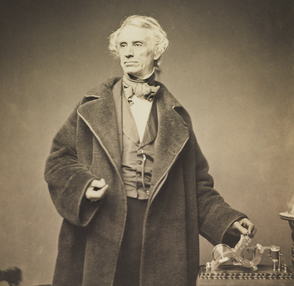


### -- --- .-. ... . / .- -. -.. / - .... . / ..-. .. .-. ... - / .. -. - . .-. . -. -

<small>

[https://shawngraham.github.io/hist1900/assets/slides/feb13](https://shawngraham.github.io/hist1900/assets/slides/feb13)

</small>
</div></script></section><section  data-markdown><script type="text/template"><!-- .slide: class="drop" -->
<div class="" style="position: absolute; left: 0px; top: 0px; height: 700px; width: 960px; min-height: 700px; display: flex; flex-direction: column; align-items: center; justify-content: center" absolute="true">

- we've seen how lots of techs exist as *assemblages*
- assemblages can be thought of as *complex systems*
- in the right conditions, complex systems can *evolve*

But what are the right conditions? Why did the electrical telegraph win out?
</div></script></section><section  data-markdown><script type="text/template"><!-- .slide: class="drop" -->
<div class="" style="position: absolute; left: 0px; top: 0px; height: 700px; width: 960px; min-height: 700px; display: flex; flex-direction: column; align-items: center; justify-content: center" absolute="true">

- And having won out, what did it teach us about *networks* powered by *electricity*?

- For that, we need a framework that helps us identify the *why* of the story.

- History is a *verb*, an inquiry; we inquire to understand *why*
</div>

<aside class="notes"><p>We&#39;ll follow the work of Brian Winston here. This isn&#39;t to say this is the best framework, or the only framework; it just happens to <em>be</em> a framework that helps direct our attention to certain common patterns. This moves us into the world of historical theory; different theories cause us to pay attention to different elements and the way they interrelate. History isn&#39;t the past; history is a tool for <em>making sense</em> of the past in the <strong>present</strong>. One thing you might make a note of is to look Brian Winston up, look up reviews of his work. This is the work of <em>historiography</em> and is just as necessary to doing history as all the other bits.</p>
</aside></script></section><section  data-markdown><script type="text/template"><!-- .slide: class="drop" -->
<div class="" style="position: absolute; left: 0px; top: 0px; height: 700px; width: 960px; min-height: 700px; display: flex; flex-direction: column; align-items: center; justify-content: center" absolute="true">

right-click, save image link, paste into your obsidian with `` if you want

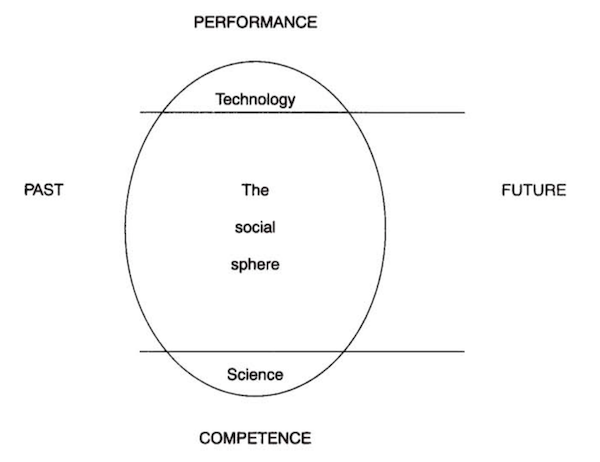
</div></script></section><section  data-markdown><script type="text/template"><!-- .slide: class="drop" -->
<div class="" style="position: absolute; left: 0px; top: 0px; height: 700px; width: 960px; min-height: 700px; display: flex; flex-direction: column; align-items: center; justify-content: center" absolute="true">

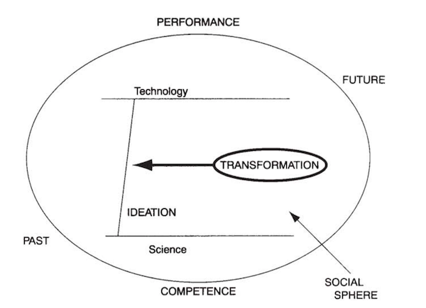
</div></script></section><section  data-markdown><script type="text/template"><!-- .slide: class="drop" -->
<div class="" style="position: absolute; left: 0px; top: 0px; height: 700px; width: 960px; min-height: 700px; display: flex; flex-direction: column; align-items: center; justify-content: center" absolute="true">

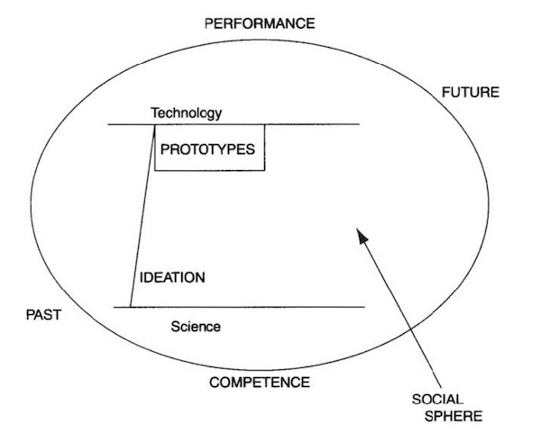
</div></script></section><section  data-markdown><script type="text/template"><!-- .slide: class="drop" -->
<div class="" style="position: absolute; left: 0px; top: 0px; height: 700px; width: 960px; min-height: 700px; display: flex; flex-direction: column; align-items: center; justify-content: center" absolute="true">

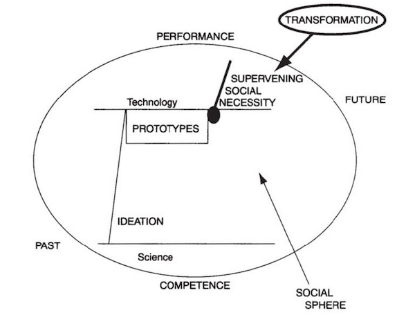
</div></script></section><section  data-markdown><script type="text/template"><!-- .slide: class="drop" -->
<div class="" style="position: absolute; left: 0px; top: 0px; height: 700px; width: 960px; min-height: 700px; display: flex; flex-direction: column; align-items: center; justify-content: center" absolute="true">

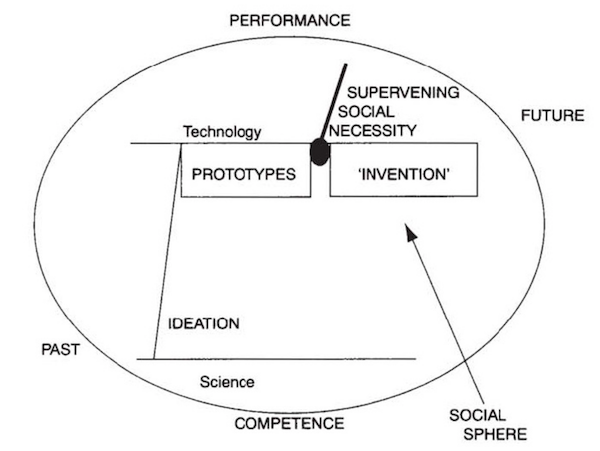
</div></script></section><section  data-markdown><script type="text/template"><!-- .slide: class="drop" -->
<div class="" style="position: absolute; left: 0px; top: 0px; height: 700px; width: 960px; min-height: 700px; display: flex; flex-direction: column; align-items: center; justify-content: center" absolute="true">

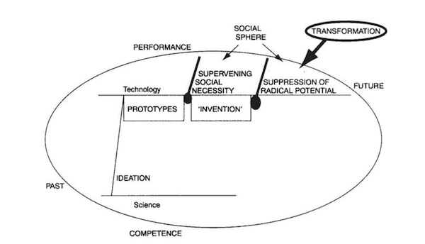
</div></script></section><section  data-markdown><script type="text/template"><!-- .slide: class="drop" -->
<div class="" style="position: absolute; left: 0px; top: 0px; height: 700px; width: 960px; min-height: 700px; display: flex; flex-direction: column; align-items: center; justify-content: center" absolute="true">

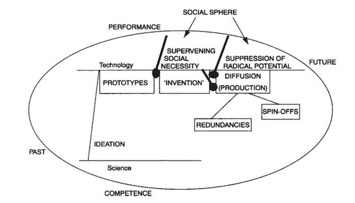
</div></script></section><section  data-markdown><script type="text/template"><!-- .slide: class="drop" -->
<div class="" style="position: absolute; left: 0px; top: 0px; height: 700px; width: 960px; min-height: 700px; display: flex; flex-direction: column; align-items: center; justify-content: center" absolute="true">

so.... the telegraph. What are some of the 'competences' required for it, based on what I've already told you?
</div>

<aside class="notes"><p>-by 17c, idea of magnetic need to pick out messages and a relationshipp with static electricity already well mooted</p>
</aside></script></section><section  data-markdown><script type="text/template"><!-- .slide: class="drop" -->
<div class="" style="position: absolute; left: 0px; top: 0px; height: 700px; width: 960px; min-height: 700px; display: flex; flex-direction: column; align-items: center; justify-content: center" absolute="true">


</div>

<aside class="notes"><p>-before the optical telegraph, Chappe brothers had experimented with static to move an indicator, but found it really difficult (end of 18th C, remember)
-optical telegraph - social necessity - usually described in terms of the needs of the revolution, french army
    - but creates inertia</p>
</aside></script></section><section  data-markdown><script type="text/template"><!-- .slide: class="drop" -->
<div class="" style="position: absolute; left: 0px; top: 0px; height: 700px; width: 960px; min-height: 700px; display: flex; flex-direction: column; align-items: center; justify-content: center" absolute="true">

## Admiralty Says No

- Ralph Wedgewood - comes up with scheme 1814; admiralty says no
- Francis Ronald - comes up with scheme 1816 - admiralty says no
</div>

<aside class="notes"><ul>
<li>cousin of famous potter Josiah Wedgewood who was inventor/improver of kiln technologies, maker of famous pottery; inventor of carbon paper for copying writing; pitches an electrical telegraph idea to the admiralty, they say no</li>
<li>we&#39;ve already heard about Francis Ronald, who ran a system over 8 miles around his garden (the fact that all the wires were close together enabled it to work; in a straight line, his system didn&#39;t, which later experimenters were disappointed to learn, until Joseph Henry figures out the relay and ways to wire batteries so that the current carries). His system had a clock face w/ letters, and required both ends to be syncronised so that when a pulse came through and moved the needle, you could read which letter was currently in view.</li>
<li>Admirality: &quot;telegraphs of any kind are now wholly unnecessary&quot;</li>
<li>ships had flags, armies had sempahore, no supervening social necessity</li>
</ul>
</aside></script></section><section  data-markdown><script type="text/template"><!-- .slide: class="drop" -->
<div class="" style="position: absolute; left: 0px; top: 0px; height: 700px; width: 960px; min-height: 700px; display: flex; flex-direction: column; align-items: center; justify-content: center" absolute="true">

## Supervening Social Necessity

<div align="left">
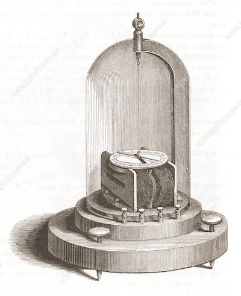

</div>

- all the pieces were in place
- especially the creation of the galvanometer 
- the emergence of the railroad provides the necessity that the Admiralty's blinkered view could not
- first passenger railway Stockton-Darlington in UK, 1825
</div>

<aside class="notes"><ul>
<li>key idea, that electricity can move a needle (known for centuries)</li>
<li>galvanometer pictured is from the 1820s, measures an electrical current by the magnetic deflection it produces. The electric current passes through the electromagnetic coils at lower centre. The rod suspended above the coils at centre rotates as it is deflected, allowing a reading to be taken from the dial. independently developed by Johann Schweigger and Johann Poggendorff at roughly the same time in 1820s.</li>
</ul>
</aside></script></section><section  data-markdown><script type="text/template"><!-- .slide: class="drop" -->
<div class="" style="position: absolute; left: 0px; top: 0px; height: 700px; width: 960px; min-height: 700px; display: flex; flex-direction: column; align-items: center; justify-content: center" absolute="true">

## 'Oh, what if we have two trains on the line at once?'

- within a decade, hundreds of miles built
- problem of communicating when the line is clear now pressing
	- 1838 Edward Davy
	- 1838 William Cooke and Charles Wheatstone
</div>

<aside class="notes"><p>Davy was a phsyician and pharmacist. In 1836 publishes ideas around telegraphy and demonstrates a working model in 1837. Also invents a kind of relay where a needle dips into mercurcy when electricity passes through the coil. Approaches the railroad with his solution.</p>
<p>Cooke and Wheatstone are working at the same time; they too approached a railroad (in their case, the great western railway), paddington to west drayton</p>
<p>Both teams get patents at roughly the same time, sets off huge legal battles which eventually ruin Davy, who gives up, moves to australia. C &amp; W eventually have court battles with Morse, too.</p>
<p>IMPORTANT- railroad, not admiralty. And the idea of carrying all sorts of goods quickly makes it clear that a telegraph could carry all sorts of messages, not just safety rail-related things.</p>
</aside></script></section><section  data-markdown><script type="text/template"><!-- .slide: class="drop" -->
<div class="" style="position: absolute; left: 0px; top: 0px; height: 700px; width: 960px; min-height: 700px; display: flex; flex-direction: column; align-items: center; justify-content: center" absolute="true">

## So very steampunk

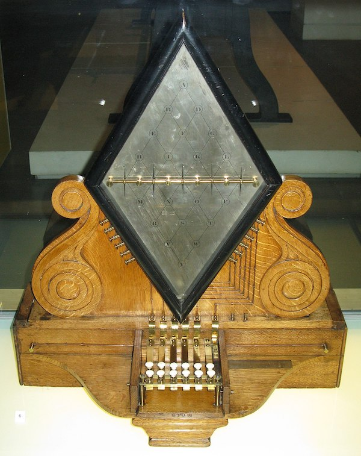


William Fothergill Cooke and Charles Wheatstone's electric telegraph ("needle telegraph") from 1837 now in the London Science Museum
</div>

<aside class="notes"><p>system had 5 galvometers, required multiple wires/circuits; by deflecting the needles you could indicate where on the diamond to read the letter. Davy&#39;s system seems to have used chemically treated paper to record electrical impulses (an ancestor of the fax machine!).  Meanwhile, in Germany, russian diplomat named Pawel Schilling builds his own telegraph device based like the others on the galvanometer, but uses single wire and just treats the deflections as a kind of code, where left/right deflections (positive, negative) could give you RL=A, RRR = B, C =RLL etc. Russian emperor sees it as a source of subversion and prohibits all knowledge of telegraphy in Russia.</p>
<p>anyway: competence: idea exists, principles known, there&#39;s a device - the galvanometer - that can be adapted. supervening necessity: railroad. Therefore: multiple devices/inventions/approaches all emerge at roughly the same time. Schilling&#39;s key insight was that the whole approach could be radically simplified by using encoding. faculty of physics at U Gottingen build a schilling-type telegraph to join their department with its lab, 1.25 miles, used a 4-bit left/right code, powered by an early dynamo, not a battery.</p>
</aside></script></section><section  data-markdown><script type="text/template"><!-- .slide: class="drop" -->
<div class="" style="position: absolute; left: 0px; top: 0px; height: 700px; width: 960px; min-height: 700px; display: flex; flex-direction: column; align-items: center; justify-content: center" absolute="true">

## Enter Morse


</div>

<aside class="notes"><p>born 1791, graduates from yale in 1810; was an artist; but had taken classes at yale across a wide variety of topics. Went to england to study painting, came back, painted prominent american politicians, found employement also as a professor of fine art; travelled again in europe in the 1830s. learns of Michael Faraday&#39;s experiments in electricity.</p>
<p>starts puttering around himself, especially re telegraphy, but can&#39;t figure out some of the issues related to constant power. Because of his social connections and position within east coast academia &amp; familiarty with politicians, eventually meets Joseph Henry and learns of his work with magnets and relays.</p>
<p>Morse builds a telegraphic device</p>
<ul>
<li>it records galvanic deflections on paper</li>
<li>uses single circuit</li>
<li>annihalates distance with relays</li>
</ul>
</aside></script></section><section  data-markdown><script type="text/template"><!-- .slide: class="drop" -->
<div class="" style="position: absolute; left: 0px; top: 0px; height: 700px; width: 960px; min-height: 700px; display: flex; flex-direction: column; align-items: center; justify-content: center" absolute="true">

Counting letters

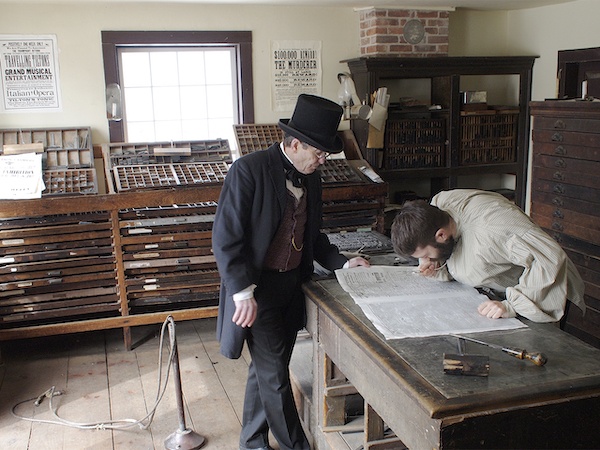


(photo [bank of canada](https://www.bankofcanadamuseum.ca/2015/08/swindle-canadian-phantom-banks/))
</div>

<aside class="notes"><p>Morse and his assistant alfred vail realize, like schilling, that the key to efficiency is code. But unlike others, they didn&#39;t rely on common sense understandings of language but actually went to a printer&#39;s office to look at the trays of type, to figure out the actual frequencies of letter use and thus to develop a code. <strong>It&#39;s easier to learn a code than to design enough circuitry to display letters</strong>  (original plan was to use a codebook, and just transmit numbers, but Vail does the counting of the moveable type and expands things)</p>
<p>first message, 1844: &#39;What has god wrought&#39;, from baltimore to washington</p>
</aside></script></section><section  data-markdown><script type="text/template"><!-- .slide: class="drop" -->
<div class="" style="position: absolute; left: 0px; top: 0px; height: 700px; width: 960px; min-height: 700px; display: flex; flex-direction: column; align-items: center; justify-content: center" absolute="true">

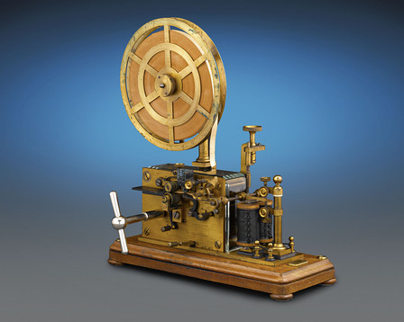

wikimedia commons
</div>

<aside class="notes"><p>original receiver made indentations on a tape; when a current passed through it tripped a relay pushing a needle into a moving tape powered by clockwork; operators soon realized that the difference in sound this process made could easily be interpreted, with practice (and becomes the basis for radio telegraphy in due course)... but this paper tape device is destined to become part of the future too...</p>
</aside></script></section><section  data-markdown><script type="text/template"><!-- .slide: class="drop" -->
<div class="" style="position: absolute; left: 0px; top: 0px; height: 700px; width: 960px; min-height: 700px; display: flex; flex-direction: column; align-items: center; justify-content: center" absolute="true">


</div>

<aside class="notes"><p>Why Baltimore to Washington? Who paid for this? US gov&#39;t had issued a prize of $30 000 to whoever could build a &#39;telegraph&#39; along the eastern seaboard. When they issued the call, they were thinking optical telegraphy; Morse uses his connections to say to congress, hey, my <em>electrical</em> telegraph will do the trick, give me the money. So they do, in 1843, but they put a time limit on things.</p>
<p>Morse starts building his line along the railroad from baltimore to washington (one of first lines in US); laid his cable in a pipe and buried it. Wire burned out! In a panic, he strings wire from trees, buildings, poles along the route and successfully transmits his message beating the dealine. What has god wrought indeed.</p>
</aside></script></section><section  data-markdown><script type="text/template"><!-- .slide: class="drop" -->
<div class="" style="position: absolute; left: 0px; top: 0px; height: 700px; width: 960px; min-height: 700px; display: flex; flex-direction: column; align-items: center; justify-content: center" absolute="true">

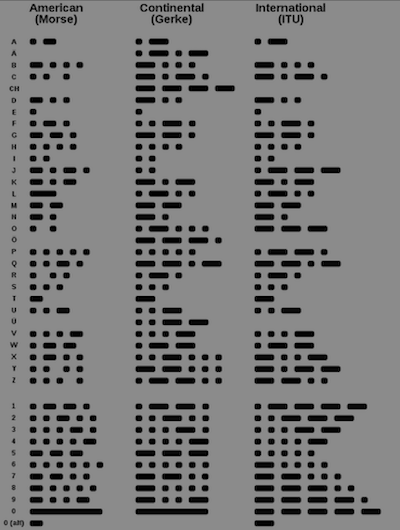
</div>

<aside class="notes"><p>in time, variations of morse code emerge due to the physical constraints of long distance telegraphy, of the kinds of interference that emerge, and to find better efficiencies in the transformation of info. This interplay between the message and the medium and its physical constraints is something we&#39;ll come back to when we talk about telephony</p>
</aside></script></section><section  data-markdown><script type="text/template"><!-- .slide: class="drop" -->
<div class="" style="position: absolute; left: 0px; top: 0px; height: 700px; width: 960px; min-height: 700px; display: flex; flex-direction: column; align-items: center; justify-content: center" absolute="true">

[Let's tak a look at that original telegraph message](https://upload.wikimedia.org/wikipedia/commons/f/f1/The_First_Telegraph.jpg) You'll need to zoom in to see what's going on.
</div></script></section><section  data-markdown><script type="text/template"><!-- .slide: class="drop" -->
<div class="" style="position: absolute; left: 0px; top: 0px; height: 700px; width: 960px; min-height: 700px; display: flex; flex-direction: column; align-items: center; justify-content: center" absolute="true">

## Suppression/Diffusion

For next day.
</div></script></section></div>
    </div>

    <script src="dist/reveal.js"></script>

    <script src="plugin/markdown/markdown.js"></script>
    <script src="plugin/highlight/highlight.js"></script>
    <script src="plugin/zoom/zoom.js"></script>
    <script src="plugin/notes/notes.js"></script>
    <script src="plugin/math/math.js"></script>
	<script src="plugin/mermaid/mermaid.js"></script>
	<script src="plugin/chart/chart.min.js"></script>
	<script src="plugin/chart/plugin.js"></script>
	<script src="plugin/customcontrols/plugin.js"></script>

    <script>
      function extend() {
        var target = {};
        for (var i = 0; i < arguments.length; i++) {
          var source = arguments[i];
          for (var key in source) {
            if (source.hasOwnProperty(key)) {
              target[key] = source[key];
            }
          }
        }
        return target;
      }

	  function isLight(color) {
		let hex = color.replace('#', '');

		// convert #fff => #ffffff
		if(hex.length == 3){
			hex = `${hex[0]}${hex[0]}${hex[1]}${hex[1]}${hex[2]}${hex[2]}`;
		}

		const c_r = parseInt(hex.substr(0, 2), 16);
		const c_g = parseInt(hex.substr(2, 2), 16);
		const c_b = parseInt(hex.substr(4, 2), 16);
		const brightness = ((c_r * 299) + (c_g * 587) + (c_b * 114)) / 1000;
		return brightness > 155;
	}

	var bgColor = getComputedStyle(document.documentElement).getPropertyValue('--r-background-color').trim();
	var isLight = isLight(bgColor);

	if(isLight){
		document.body.classList.add('has-light-background');
	} else {
		document.body.classList.add('has-dark-background');
	}

      // default options to init reveal.js
      var defaultOptions = {
        controls: true,
        progress: true,
        history: true,
        center: true,
        transition: 'default', // none/fade/slide/convex/concave/zoom
        plugins: [
          RevealMarkdown,
          RevealHighlight,
          RevealZoom,
          RevealNotes,
          RevealMath.MathJax3,
		  RevealMermaid,
		  RevealChart,
		  RevealCustomControls,
        ],


    	allottedTime: 120 * 1000,

		mathjax3: {
			mathjax: 'plugin/math/mathjax/tex-mml-chtml.js',
		},
		markdown: {
		  gfm: true,
		  mangle: true,
		  pedantic: false,
		  smartLists: false,
		  smartypants: false,
		},

		mermaid: {
			theme: isLight ? 'default' : 'dark',
		},

		customcontrols: {
			controls: [
			]
		},
      };

      // options from URL query string
      var queryOptions = Reveal().getQueryHash() || {};

      var options = extend(defaultOptions, {"width":960,"height":700,"margin":0.04,"controls":true,"progress":true,"slideNumber":false,"transition":"fade","transitionSpeed":"default"}, queryOptions);
    </script>

    <script>
      Reveal.initialize(options);
    </script>
  </body>

  <!-- created with Advanced Slides -->
</html>
